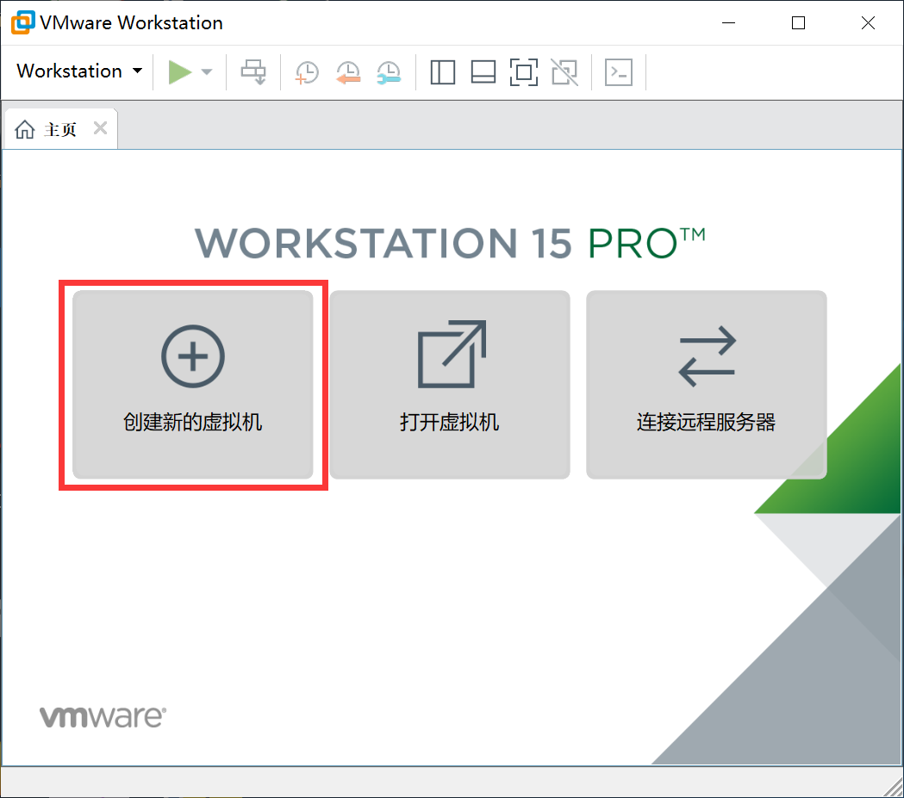

学籍备案以及环境准备 Date：第一周https://peana.github.io/2019/08/15/first-week-work/
前言 作为刚毕业的一个小白，安全这个大领域我还是没真正入门。 19年的暑假，很幸运的信安之路举办了一个小白计划，趁此机会加入学习，以此博客记录我的学习成长，望一年后，自己有所成长。
个人资料 个人在知识星球中的ID：911
常用名：胖花
目前职业：在职（今年刚入职）
所在地区：江苏南京
熟悉的编程语言：python
自我介绍：一个在安全门前徘徊了两年的小白。
第一周环境准备报告 一、在VMware中安装centos 1、 从阿里云镜像中（http://centos.sonn.com/7.6.1810/isos/x86_64/CentOS-7-x86_64-DVD-1810.iso）**下载ISO镜像**：
2、在VMware中创建新的虚拟机

按照自己所下的iso镜像选择对应的系统版本：
给虚拟机命名，并选择存放位置：
选择磁盘大小，对于centos而言，20G足够：
重新编辑虚拟机设置 ，导入iso镜像：
虚拟机开机，进入centos的系统安装，选择install CentOS 7 ：
选择简体中文安装：
在此界面处，从上至下，从左至右，逐个完成各项设置：
所有项目都设置完成后点击开始安装
设置ROOT密码 和创建用户 后，安装开始：
最后，接受许可 ，完成网络和主机名的设置：
重启输入用户密码，进入CentOS7
关机后拍摄快照：虚拟机–快照–拍摄快照
以便日后操作失误后可回退
二、基础化设置 1、修改主机名
1 2 3 4 5 echo $HOSTNAME hostnamectl set-hostname test.example.com vim /etc/hosts #ip与主机名绑定并设置主机名别名 192.168.48.135 test.example.com test
2、重命名网卡为eth0，修改内核参数，
1 2 3 4 5 6 7 8 9 10 11 12 13 14 cd /etc/sysconfig/network-scripts/mv ifcfg-ens33 ifcfg-eth0 vim ifcfg-eth0 BOOTPROTO=dhcp NAME=eth0 DEVICE=eth0 ONBOOT=yes vim /etc/sysconfig/grub 增加 net.ifnames=0 biosdevname=0 在GRUB_CMDLINE_LI grub2-mkconfig -o /boot/grub2/grub.cfg
3、设置网络yum源
（1）、备份原始yum源
1 2 cd /etc/yum.repos.dmv CentOS-Base.rpeo CentOS-Base.repo.bak
（2）、设置DNS
1 2 3 4 vim /etc/resolv.conf nameserver 114.114.114.114 nameserver 8.8.8.8
（3）、下载yum文件，替代原yum源
1 2 3 wget -O /etc/yum.repos.d/CentOS-Base.repo http://mirrors.aliyun.com/repo/Centos-7.repo yum clean all yum makecache
（4）、配置ELEP源：
1 2 3 yum -y install epel-release yum clean all yum makecache
三、安装nginx，php，mysql （一）、源码安装nginx 1、安装nginx依赖包yum install -y pcre-devel zlib-devel openssl-devel wget gcc tree vim
2、从Nginx官网下载Nginx源码包wget http://nginx.org/download/nginx-1.12.2.tar.gz
3、解压Nginx源码包到/root/nginx，编译安装
1 2 3 4 5 6 tar -xzvf nginx-1.12.2.tar.gz cd /root/nginx*./configure --prefix=/usr/local /nginx --with-http_ssl_module make && make install
4、启动nginx
1 2 3 4 5 6 7 8 9 10 11 12 13 14 setenforce 0 systemctl stop firewalld systemctl disable firewalld cd /usr/local /nginxpwd ls /usr/local /nginx/sbin/nginx ps aux | grep nginx netstat -tlnp
5、使用本地主机访问虚拟机上的Nginx服务器
6、停止nginx
1 2 3 4 5 6 7 /usr/local /nginx/sbin/nginx -s stop /usr/local /nginx/sbin/nginx -s quit killall nginx
7、把nginx命令添加到环境变量
1 2 3 4 5 6 7 8 9 10 11 12 13 14 15 16 ln -s /usr/local /nginx/sbin/nginx /usr/local /sbin ll /usr/local /sbin/ | grep "nginx" echo $PATH vim ~/.bash_profile export PATH=$PATH :/usr/local /nginx/sbinsource ~/.bash_profilenginx nginx -s quit
8、把nginx命令添加到系统服务/root/service-nginx.sh
1 2 3 4 5 6 7 8 9 10 11 12 13 14 15 16 17 18 19 20 21 22 23 24 25 26 27 28 29 30 31 32 33 34 35 36 37 38 39 40 41 42 43 44 45 46 47 48 49 50 51 52 53 54 55 56 57 58 59 60 61 62 63 64 65 66 67 68 69 70 71 72 73 74 75 76 77 78 79 80 81 82 83 84 85 86 87 88 89 90 91 92 93 94 95 96 97 98 99 100 101 102 103 104 105 106 107 108 109 110 111 112 113 114 115 116 117 118 119 120 121 122 123 124 125 126 127 128 129 130 131 132 133 134 135 136 #!/bin/sh . /etc/rc.d/init.d/functions . /etc/sysconfig/network [ "$NETWORKING " = "no" ] && exit 0 nginx="/usr/local/sbin/nginx" prog=$(basename $nginx ) NGINX_CONF_FILE="/usr/local/nginx/conf/nginx.conf" [ -f /etc/sysconfig/nginx ] && . /etc/sysconfig/nginx lockfile=/var/lock/subsys/nginx make_dirs user=`$nginx -V 2>&1 | grep "configure arguments:.*--user=" | sed 's/[^*]*--user=\([^ ]*\).*/\1/g' -` if [ -n "$user " ]; then if [ -z "`grep $user /etc/passwd`" ]; then useradd -M -s /bin/nologin $user fi options=`$nginx -V 2>&1 | grep 'configure arguments:' ` for opt in $options ; do if [ `echo $opt | grep '.*-temp-path' ` ]; then value=`echo $opt | cut -d "=" -f 2` if [ ! -d "$value " ]; then mkdir -p $value && chown -R $user $value fi fi done fi } start [ -x $nginx ] || exit 5 [ -f $NGINX_CONF_FILE ] || exit 6 make_dirs echo -n $"Starting $prog : " daemon $nginx -c $NGINX_CONF_FILE retval=$? echo [ $retval -eq 0 ] && touch $lockfile return $retval } stop echo -n $"Stopping $prog : " killproc $prog -QUIT retval=$? echo [ $retval -eq 0 ] && rm -f $lockfile return $retval } restart configtest || return $? stop sleep 1 start } reload configtest || return $? echo -n $"Reloading $prog : " killproc $nginx -HUP RETVAL=$? echo } force_reload restart } configtest $nginx -t -c $NGINX_CONF_FILE } rh_status status $prog } rh_status_q rh_status >/dev/null 2>&1 } case "$1 " in start) rh_status_q && exit 0 $1 ;; stop) rh_status_q || exit 0 $1 ;; restart|configtest) $1 ;; reload) rh_status_q || exit 7 $1 ;; force-reload) force_reload ;; status) rh_status ;; condrestart|try-restart) rh_status_q || exit 0 ;; *) echo $"Usage: $0 {start|stop|status|restart|condrestart|try-restart|reload|force-reload|configtest}" exit 2 esac
1 2 3 4 5 6 mv /root/service-nginx.sh /etc/init.d/nginx chmod 755 /etc/init.d/nginx systemctl start nginx
（二）、安装php-fpm nginx本身不能处理PHP，它只是个web服务器，当接收到请求后，如果是php请求，则发给php解释器处理，并把结果返回给客户端。
此处采用php-fpm使nginx支持PHP
1 2 3 4 5 6 7 8 9 yum -y install gcc automake autoconf libtool make yum -y install gcc gcc-c++ glibc yum -y install libmcrypt-devel mhash-devel libxslt-devel libjpeg libjpeg-devel libpng libpng-devel freetype freetype-devel libxml2 libxml2-devel zlib zlib-devel glibc glibc-devel glib2 glib2-devel bzip2 bzip2-devel ncurses ncurses-devel curl curl-devel e2fsprogs e2fsprogs-devel krb5 krb5-devel libidn libidn-devel openssl openssl-devel
2、获取php-fpm的tar包wget http://cn2.php.net/distributions/php-5.4.7.tar.gz
3、解压、预编译及安装
1 2 3 4 5 6 7 8 9 10 tar zvxf php-5.4.7.tar.gz cd php-5.4.7./configure --prefix=/usr/local /php --enable-fpm --with-mcrypt --enable-mbstring --disable-pdo --with-curl --disable-debug --disable-rpath --enable-inline-optimization --with-bz2 --with-zlib --enable-sockets --enable-sysvsem --enable-sysvshm --enable-pcntl --enable-mbregex --with-mhash --enable-zip --with-pcre-regex --with-mysql --with-mysqli --with-gd --with-jpeg-dir make && make install
4、修改php-fpm配置
1 2 3 4 5 6 7 8 9 10 11 12 13 14 15 16 17 18 19 20 21 22 23 24 25 26 27 28 29 30 groupadd www-data useradd -s /bin/bash -m -g www-data www-data cd /usr/local /php/etccp ./php-fpm.conf.default php-fpm.conf vim php-fpm.conf pid = /usr/local /php/var/run/php-fpm.pid vim ./php-fpm.d/www.conf user = www-data group = www-data pm.max_children = 150 pm.start_servers = 8 pm.min_spare_servers = 5 pm.max_spare_servers = 10 cd /usr/local /nginx/conflocation ~ .php$ { root html; fastcgi_pass 127.0.0.1:9000; fastcgi_index index.php; fastcgi_param SCRIPT_FILENAME $document_root$fastcgi_script_name ; include fastcgi_params; }
5、配置完成，在nginx根目录下创建php文件测试能否正常使用
1 2 3 4 cd /usr/local /nginx/htmltouch index.php vim index.php <?php phpinfo();?>
6、使用浏览器访问
（三）、源码安装mysql 1、首先检查所用的linux安装过mysql，并卸载CentOS7默认携带的mariadb包
1 2 3 4 5 6 7 rpm -qa | grep -i mysql rpm -qa | grep -i mariadb rpm -e mariadb-libs-5.5.60-1.el7_5.x86_64 yum remove mariadb-libs-5.5.60-1.el7_5.x86_64
2、从mysql官网获取mysql源码文件https://downloads.mysql.com/archives/community/，确定mysql版本后选择Source Code+Generic Linux(通用linux)如下图所示：
3、下载tar包，并将下载的tar包解压缩wget https://downloads.mysql.com/archives/get/file/mysql-5.7.24.tar.gztar -zxvf mysql-5.7.24.tar.gz
4、安装编译软件和依赖yum updateyum install -y cmake make gcc gcc-c++ wget ncurses-devel cmake make perl ncurses-devel openssl-devel bison-devel libaio libaio-devel
5、创建mysql用户和用户组
1 2 3 4 groupadd mysql useradd -s /bin/bash -m -g mysql mysql
6、创建mysql相关目录
1 2 3 4 5 6 7 8 9 10 11 12 13 14 | 目录 | 含义 | 配置参数 | | :——— | ————————————– | —————————————- | | bin_log | 二进制日志目录 | log_bin_basename log_bin_index | | mydata | 数据文件目录 | datadir | | innodb_log | InnoDB重做日志目录 | innodb_log_group_home_dir | | innodb_ts | InnoDB共享表空间目录 | innodb_data_home_dir | | log | 日志文件目录(error log +general log +slow log ) | log_error general_log_file slow_query_log_file | | relay_log | InnoDB中继日志目录 | relay_log_basename relay_log_index | | tmpdir | 临时文件目录 | tmpdir | | undo_log | InnoDB回滚日志目录 | innodb_undo_directory |
1 2 3 4 5 6 7 8 mkdir -p /home/mysql/data/bin_log mkdir -p /home/mysql/data/db_file mkdir -p /home/mysql/data/innodb_log mkdir -p /home/mysql/data/innodb_ts mkdir -p /home/mysql/data/log mkdir -p /home/mysql/data/relay_log mkdir -p /home/mysql/data/tmpdir mkdir -p /home/mysql/data/undo_log
7、设置创建的目录的所属用户和所属组
1 2 chown -R mysql:mysql /home/mysql/data chown -R mysql:mysql /usr/local /mysql
8、编译安装MySQL
1 2 3 4 5 6 7 8 9 10 11 12 13 14 15 16 17 18 19 20 21 22 23 24 25 26 27 28 29 30 31 32 33 34 cd /home/source /mysql-5.7.16cmake \ -DCMAKE_BUILD_TYPE=RelWithDebInfo \ -DCMAKE_INSTALL_PREFIX=/usr/local /mysql \ -DMYSQL_UNIX_ADDR=/usr/local /mysql/mysql.sock \ -DDEFAULT_CHARSET=utf8 \ -DDEFAULT_COLLATION=utf8_general_ci \ -DMYSQL_DATADIR=/home/mysql/data \ -DSYSCONFDIR=/etc/my.cnf \ -DWITH_MYISAM_STORAGE_ENGINE=1 \ -DWITH_INNOBASE_STORAGE_ENGINE=1 \ -DWITH_PARTITION_STORAGE_ENGINE=1 \ -DENABLE_DEBUG_SYNC=0 \ -DENABLED_LOCAL_INFILE=1 \ -DENABLED_PROFILING=1 \ -DMYSQL_TCP_PORT=3306 \ -DWITH_DEBUG=0 \ -DWITH_SSL=yes \ -DWITH_BOOST=/usr/local /boost/boost_1_59_0.tar.gz rm -rf CMakeCache.txt wget http://sourceforge.net/projects/boost/files/boost/1.59.0/boost_1_59_0.tar.gz -DDOWNLOAD_BOOST=1 \ -DWITH_BOOST=/usr/local /boost -DWITH_BOOST=/usr/local /boost/boost_1_59_0.tar.gz make && make install
1 2 3 4 5 6 7 8 9 10 11 12 13 14 DCMAKE_INSTALL_PREFIX=/usr/local /mysql:安装路径 DMYSQL_DATADIR=/data/mysql:数据文件存放位置 DSYSCONFDIR=/etc:my.cnf路径 DWITH_MYISAM_STORAGE_ENGINE=1:支持MyIASM引擎 DWITH_INNOBASE_STORAGE_ENGINE=1:支持InnoDB引擎 DMYSQL_UNIX_ADDR=/data/mysql/mysqld.sock:连接数据库socket路径 DMYSQL_TCP_PORT=3306:端口 DENABLED_LOCAL_INFILE=1:允许从本地导入数据 DWITH_PARTITION_STORAGE_ENGINE=1:安装支持数据库分区 DEXTRA_CHARSETS=all:安装所有的字符集 DDEFAULT_CHARSET=utf8:默认字符 DWITH_EMBEDDED_SERVER=1:嵌入式服务器
9、设置开机自启动
1 2 3 4 cp /usr/local /mysql/support-files/mysql.server /etc/init.d/mysqld chmod +x /etc/init.d/mysqld ln -s /usr/local /mysql/bin/* /usr/local /bin/ chkconfig --add mysqld
10、初始化MySQL
1 2 3 4 5 6 7 8 9 10 11 12 13 14 15 16 17 18 19 20 cp /usr/local /mysql/support-files/my-default.cnf /etc/my.cnf vim /etc/my.cnf basedir = /usr/local /mysql datadir = /home/mysql/data innodb_buffer_pool_size = 128M explicit_defaults_for_timestamp=true socket=/usr/local /web/mysql/mysql.sock [mysqld_safe] log-error = /home/mysql/data/error.log sql_mode=NO_ENGINE_SUBSTITUTION,STRICT_TRANS_TABLES cd /usr/local /web/mysql/bin mysqld --defaults-file=/etc/my.cnf --initialize --basedir=/usr/local /web/mysql --datadir=/home/mysql/data --user=mysql
11、启动MySQL服务
1 2 3 4 5 6 7 vim /etc/profile PATH=$PATH :/usr/local /web/mysql/bin:/usr/local /web/mysql/lib/ export PATHsource /etc/profile
（2）、启动MySQLmysqld_safe --defaults-file=/etc/my.cnf &service mysqld start
12、登陆MySQL并修改密码
1 2 3 4 5 6 7 8 mysql -u root UPDATE mysql.user SET authentication_string=PASSWORD('123456' ) where USER='root' ; flush privileges; exit ;
1 2 3 4 5 6 7 8 9 10 11 12 13 14 15 16 17 18 19 20 21 22 23 24 25 26 27 28 29 30 31 32 33 34 35 36 37 38 yum list installed | grep mariadb yum -y remove mariadb* cd /usr/local /srcwget https://dev.mysql.com/get/mysql57-community-release-el7-11.noarch.rpm rpm -ivh mysql57-community-release-el7-11.noarch.rpm yum repolist enabled | grep "mysql.*-community.*" yum repolist all | grep mysql yum install mysql-community-server systemctl start mysqld mysql -u root 或者 mysql ERROR 1045 (28000): Access denied for user 'root' @'localhost' (using password: NO)，解决如下： MySQL: mysqld --user=root --skip-grant-tables & UPDATE mysql.user SET Password=PASSWORD('123456' ) where USER='root' ; UPDATE mysql.user SET authentication_string=PASSWORD('123456' ) where USER='root' ; flush privileges; exit ;
13、php连接mysql/usr/local/nginx/html创建mysqlLink.php测试使用php连接mysql
1 2 3 4 5 6 7 8 9 10 11 12 <?php $servername = "localhost" ;$username = "username" ;$password = "password" ;// 创建连接 $conn = new mysqli($servername , $username , $password );// 检测连接 if ($conn ->connect_error) { die("连接失败: " . $conn ->connect_error); } echo "连接成功" ;?>
四、安全加固 （一）、nginx加固 1、禁止某些文件类型的访问
1 2 3 4 location *.(txt|doc|docx|rar)$ { root /var/www/www.xxx.xxx; Deny all; }
2、修改nginx的运行用户为www-datauser www-data;
（二）、mysql加固 1、删除默认数据和帐户
1 2 mysql> drop database test ; mysql> delete from user where not (user=’root’);
2、更改root帐户名称
1 2 mysql> update user set user=’newrootname’ where user=’root’; mysql> flush privileges;
3、限制用户的连接
1 2 3 vim /etc/my.cnf max_user_connections 150
4、目录权限限制
1 2 3 chown -R root /usr/local /mysql chown -R mysql.mysql /usr/local /mysql/var/
5、历史命令泄漏
1 2 3 4 5 6 7 8 vim ~/.bash_profile HISTSIZE=3 HISTFLESIZE=3 export HISTCONTROL=ignorespace history -c
6、限制访问数据的IP
1 2 grant selete on database.table to ‘app’@’xx.xx.xx.xx’ identified by ‘password’ with grant option; flush privileges;
（三）、ssh加固 vim sshd_configPort 10022
2、X11ForwardingX11Forwarding no